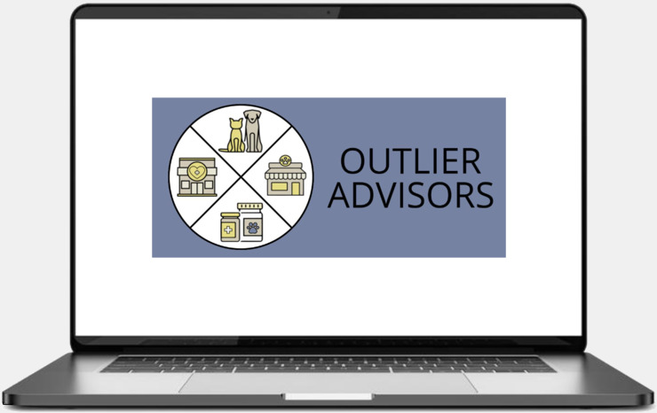
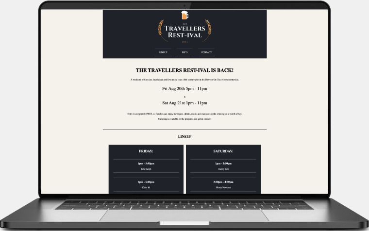

Danny
Pellatt,
FULL STACK SOFTWARE
Developer


C#

Python

SQL

HTML

CSS
JavaScript
.NET Core
Take a peek at what I've been working on:
Work Experience:
Freelance Work:
Personal Projects:
DataCo
(Project @ Bitwerx)
ASP .NET Core || C# || PostgreSQL || Entity Framework Core ORM
Azure DevOps || Azure Cloud Services
nUnit || Debugging || Swagger
Agile Practices || Scrum || Git || Trunk-Based Development || Code Reviews || Pair Programming || QA Testing
Figma || Documentation
Overview
A multi-million dollar enterprise software solution. A comprehensive report delivery tool for veterinary groups, seamlessly integrating data from various practices at the end of each month, regardless of the specific Practice Intergration Management Software (PIMS) they use.
Previously, practices had to manually complete their reporting packets through a cumbersome process and send them to the finance team. This was time-consuming, often delayed, and very prone to error. This tool automates the process, delivering timely and accurate reports.
Design & Architecture
Microsoft Stack & .NET provided the underlying framework, with the code written in C#. PostgreSQL is used to store and manage data and Entity Framework Core to access and manipulate it. There was no UI in order to achieve the smallest possible footprint.
Metrics
- Gives partners real-time visibility into status of connected practices, known issues, and all practice communications
- Flexible to specific needs, standing up custom solutions in hours instead of months
- Allowed partners to analyze information they were unable to, providing business solutions as well as improving overall pet health
PRISM
(Project @ Bitwerx)
ASP .NET Core || C# || Blazor || MudBlazor || PostgreSQL
Azure DevOps || Azure Cloud Services || Figma
nUnit || Debugging || Swagger
Agile Practices || Scrum || Git || Trunk-Based Development || Code Reviews || Pair Programming || QA Testing
Overview
Enterprise software that allows a large, multi-branch company to play around with the prices of products in individual locations.
The tool had various pages that showed information such as units sold, cost, trade price, profit, price breaks, etc. allowing managers to plan changes, and then implement them to the database directly.
Design & Architecture
I worked closely with the UX/UI team, using their Figma designs to structure the user interface.
For the backend, we used the .NET framework, working in C#, with MudBlazor to implement the UI
Metrics
- Increased pricing elasticity, allowing a company to quickly pivot to match competitors, as well as account for demand
- Showed revenue and profit margins, allowing clients to analyze pricing effects and optimize price points long term
- Assessed how pricing strategies affect the speed at which inventory is sold
Outlier Advisors
(Multiple Projects)

HTML || CSS || JavaScript
Bootstrap || JQuery || Logo design
Self-management || Project Management || Explaining technical concepts || Managing expectations || Flexibility
Overview
Continuing business relationship with a pet-health consultancy business.
Projects ranging from designing brand color pallettes and logos, website building and launching, to data collection and analysis, ready for presentation.
Design & Architecture
The clients biggest concern's with the website were ... . As a contractor, I made sure to choose the simplest technologies that could achieve this, along with well-defined documentation & designs, so that the client could change aspects of the site with little or no help.
A customer of this client wanted information regarding all possible competitors, I used a variety of techniques to gather the necessary data, with SQL to manipulate it.
Metrics
- Directly increased customer acquisition through website visitors
- Accurately analyzed and presented information, leading to a customer deciding against a costly business expansion
- Client has since used my designs and color pallettes throughout the business, including business cards and social media posts.
Travellers
Restival
(Website for a local beer/music festival)
HTML || CSS
Self-management || Discussing needs with client || Tight Deadline || Precise needs
Overview
A country pub was hosting a beer/music festival. They needed information for visitors in an area with very little service
Design
I stuck to completely HTML and CSS with no pictures, decreasing loading times
Metrics
- The festival was a success, with many attendees complimenting the ease of use
NGP Handyman
Services
(Advertising/Informative website for a handyman's business)

HTML || CSS || JavaScript || JQuery
Self-management || Discussing needs with client || Accessibility || Flexibility || SEO Techniques
Overview
A local handyman wanted customers to find him on search engines, needing accessibility.
Design
I employed large writing, off-white backgrounds, well-structured and labeled HTML, with sufficient color contrast. Simple keyword SEO was enough.
Metrics
- Nearly 3x increase in the amount of new customers
Music By
Crofton
(Landing/sign up page for an acoustic musician)

HTML || CSS || JavaScript || JQuery
Self-management || Fitting to pre-existing style || Sign-up forms || Advanced galleries & effects
Overview
An acoustic musician wanted a place for fans to find shows, sign-up for the mailing list, see videos, etc.
Design
Most of the design work was done, so it was just deciding what effects to use.
Metrics
- Many now on the mailing list
- >5 extra gigs booked per month
Cross The Pond
(Project @ TrueCoders)

ASP .Net Core MVC || C# || SQL || HTML || CSS
Bootstrap || JQuery
JSON || Dapper || Rest APIs || RestSharp || Postman
Github || Graphic Design || Photoshop
Overview
A multifunctional travel application aiding visits to Britain for Americans, and America for the British.
The purpose of this app is to act as a guide to the small differences between the UK and the US. It includes a translation dictionary, live weather searchable by city, a temperature converter, and a tipping calculator. It was the final project piece for my bootcamp.
Design & Architecture
For the back-end I made this app using C# in an MVC pattern and the translation tables worked with MySQL and Dapper. I chose a fun and cartoony theme, with free-to-use icons, manipulated with photoshop. I worked with a graphic designer, who advised tweaks to improve readability, layout and styling.
Lessons Learned
- Great feedback from boot camp, picked for their website as the alumni project spotlight
- Planning a large project with a timeline in mind, building my own ideas
- Various different front-end techniques to display data, as well as using various SQL joins.
Babel
(Project @ TrueCoders)
ASP .Net Core MVC || C#
RestAPIs || RapidAPI
Github || JSON || NewtonSoft || LINQ
Overview
In order to practice using REST APIs, create an application that simulates a conversation between two famous people or fictional characters.
The purpose of this app is to act as a guide to the small differences between the UK and the US. It includes a translation dictionary, live weather searchable by city, a temperature converter, and a tipping calculator. It was the final project piece for my bootcamp.
Design & Architecture
This application call two different API's, one that returns as a JSON object, and another that returns as a JSON array. The NewtonSoft.JSON package parsed these into strings. LINQ was used to trim and replace letters and a delay was inserted, and I concatenated in the correct punctuation, making the display look like a real online conversation.
As this was a console application, there was no front-end work.
Lessons Learned
- How to find and call different APIs
- Using LINQ within C#
- Manipulating command line responses with functions
TacoBell Geolocator
(TrueCoders)
ASP .Net Core MVC || C# || SQL
APIs || NuGet
Test Driven Development || LINQ || Team Coding
Overview
Work with a team of developers to find the two furthest TacoBell locations.
Finds and collects the coordinates of all TacoBell locations within the continental US, then calculates the distances between them. The two furthest restaurants and their distance from one another is displayed on the console.
Design & Architecture
This application call two different API's, one that returns as a JSON object, and another that returns as a JSON array. The NewtonSoft.JSON package parsed these into strings. LINQ was used to trim and replace letters and a delay was inserted, and I concatenated in the correct punctuation, making the display look like a real online conversation.
As this was a console application, there was no real front-end work.
Lessons Learned
- Work on a developer team, recieving good feedback, specifically how we split apart tasks, planned and presented.
- Using LINQ within C#
- Manipulating command line responses with functions
Check out my full
resume:
Or follow these
links:
...or get to know me a little better...
About Me:
Full Stack Software Developer, experienced with back end and front end development, along with website creation. In the past, I have worked with:
- Python
- C#
- JavaScript
- HTML, HTML5
- CSS, CSS3
- .NET Core
- Bootstrap
- JQuery
- React
- Blazor
- RestSharp
- UX/UI Design
- Figma
- Photoshop
- SQL - MySQL, PostgreSQL, MongoDB (NoSQL)
- ORMs - Entity Framework Core, Dapper
- LINQ
- JSON
- XML
- Rest APIs
- NewtonSoft.JSON
- Version control - Git, Github, Azure Repos
- Azure DevOps
- Different branching techniques - Trunk-based, Feature branching
- Unit testing - xUnit, nUnit, Swagger
- Debugging
- Authentication
- Object Oriented Programming (OOP)
- Test Driven Development (TDD)
- Development practices - Scrum, Agile, DevOps, CI/CD
- Code reviews
- Pair programming
- QA testing
- Different architectural designs - Microservices, Monolithic, Event-Driven, Cloud
A confident, friendly, and ambitious person with excellent analytical, problem-solving and organizational skills. I have a B.S. in Geology from the University of Plymouth, England.
On a more personal note, my passions include:
- Learning - Isn't everything fascinating!? In 2021 I won a prime-time British television quiz show due to a penchant for (previously) useless general knowledge.
- Music - I play 7 instruments and love to write my own songs, I released an original EP in 2019.
- Nature & travel - I've visited 12 US national parks, 42 states and over 30 countries. I love learning about geology, and nature, and experiencing new cultures.
- Food & cooking - I promise not all English food is terrible... just most of it.
- Reading - I am a fan of both fiction and non-fiction, but my guilty pleasure is Agatha Christie novels, having read over 50 of them.
- Dogs - All dogs. Small dog? Lovely. Big Dog? Amazing. Just let me pet them. I have a very loving German Shorthaired Pointer called Banjo. (Puppy Tax)
Click through to see my software development journey!

Beginning in University
Born and raised in the south of England, I was the first of my family to go to college. This is where I began playing with software, analyzing geophysical data I collected in the field, as well as modelling using Graphical Information Systems. I graduated with a BS in Geology in 2014.

My First Career
After graduation, I was signed as a singer-songwriter, getting to tour the world. After a few years, I returned to England, creating my own music business. I learned HTML, CSS, and barely enough JS to build my own website then, through family and friends, I began doing some freelance web-development.
Moving To America
I became a permanent US resident in 2021, giving me a good opportunity to plan my next chapter. I realized the reasons I love music are what makes a good developer. Creative thinking, a desire to learn, perseverance, attention to detail, and breaking down complex pieces into manageable chunks.

Graduating TrueCoders Boot Camp
I began doing online courses and reading all the books I
could find on coding, and as soon as possible, went back to
school to become a full stack developer.
I learned ASP .NET Core MVC, C#, SQL, Git, OOP, TDD,
debugging, web development, and more.
It's official Mum, I'm a Software Developer!
After graduating bootcamp, I quickly found a job as a
full-stack developer.
This is a field that encourages continuous growth, and I am
dedicated to learning more! At the moment I'm focused on
playing with some front end technologies, cracking data
structures and algorithms, and deploying my own apps
...and would you just look at all these lovely certifications.

Full Stack Software Engineer
TrueCoders

C#
SoloLearn

SQL
SoloLearn

HTML
SoloLearn

Python
SoloLearn

Rest APIs

Object Oriented Programming
Git

C#

HTML